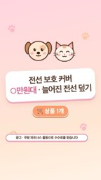

22번 영상
전선 보호 커버 · 늘어진 전선 덮기
쿠팡 링크는 아직 준비 중이에요. 아래 비교는 지금 바로 읽을 수 있어요.
전선 보호 커버 왜 필요할까
아기 댕냥이는 전선을 잘 씹어요 (머크 수의 매뉴얼 · ASPCA)
고를 때 체크
- 늘어진 선 길이만큼 (재고 사요)
- ✔ 바닥에 늘어진 선을 다 덮어요
- ⚠ 몇 m인지 먼저 재기
- 멀티탭은 따로 (발 안 닿게)
- ✔ 멀티탭째 높은 곳에
- ⚠ 커버만 믿지 않기
출처 · 머크 2024·2025 · ASPCA